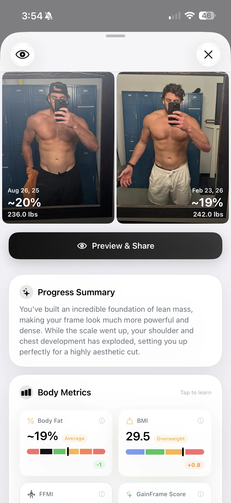
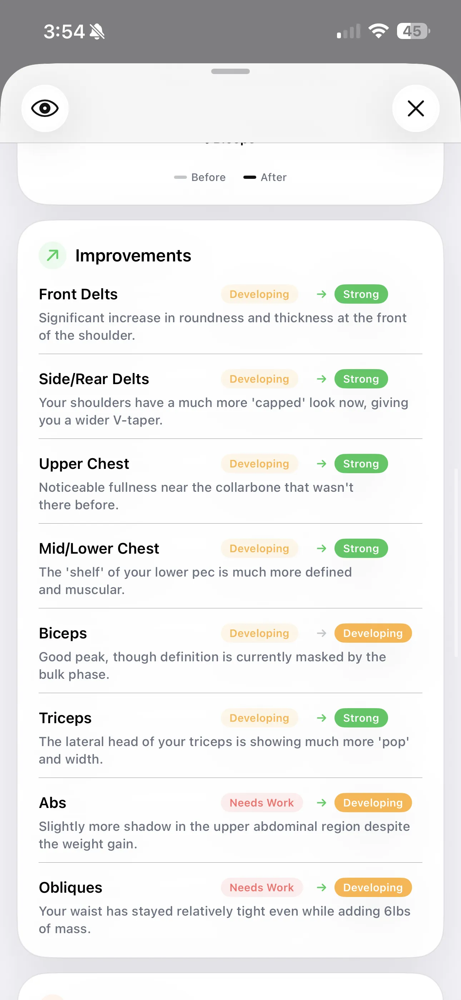
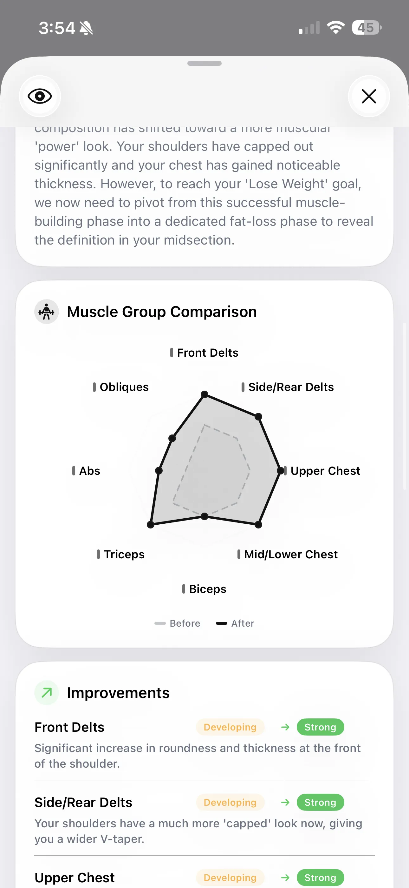
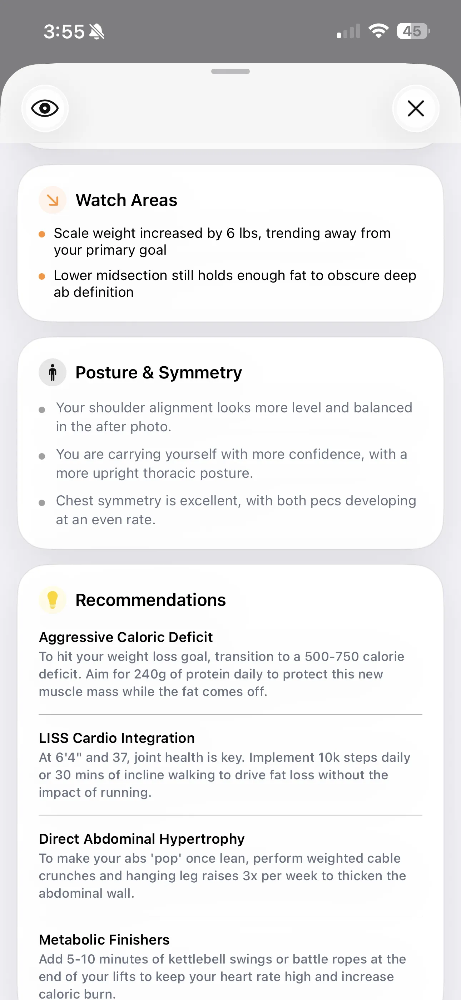
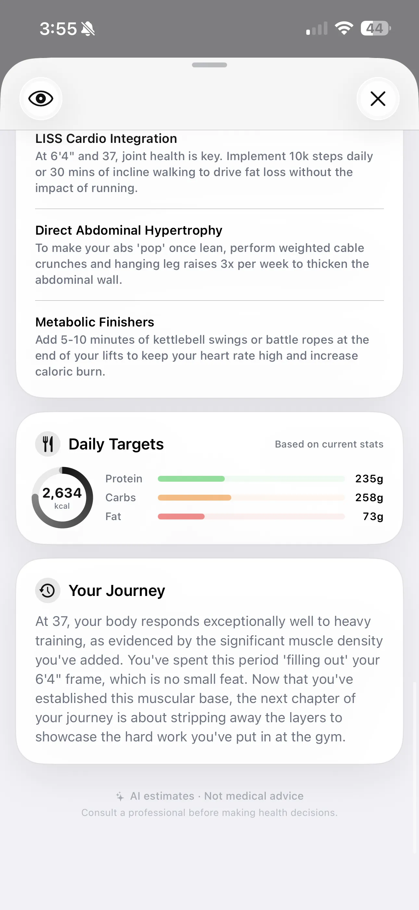

Deep Dive Compare: Quantify Exactly What Changed
Move beyond "I think I look bigger." See objective data on your body fat transitions, specific muscle upgrades, and what your next phase demands.

Instead of relying on a mirror, you get a concrete body composition comparison: a 6 lb weight gain accompanied by a 1% body fat decrease translates directly into significant lean mass addition. You see your FFMI (Fat-Free Mass Index) jump from your previous baseline in real-time. For a deeper look at what goes into these numbers, see how AI body composition analysis works.
Mapping The Granular Muscle Improvements
The core of Deep Dive Compare is tracking where those gains happened. We map specific muscle sub-groups to show exactly which areas leveled up.


This visual breakdown eliminates ambiguity. You can see your Upper Chest and Side Delts graduate from Developing to Strong, accompanied by specific observations like "Noticeable fullness near the collarbone that wasn't there before." Conversely, it highlights lagging areas, giving you clear targets for your next training block.
Monitoring Watch Areas & Posture
Beyond simple muscle gains, Deep Dive Compare closely analyzes any potentially problematic trends and tracks your structural alignment over time.

The Watch Areas segment acts as an early warning system. It will flag if your scale weight is trending away from your primary goal, or note if the lower midsection is holding onto stubborn fat masking your deep ab definition. Down below, the Posture & Symmetry tracking confirms structural progress—like noting that your shoulder alignment looks more balanced and your thoracic posture is more confident and upright compared to your "before" photo.
Updated Targets For The Next Phase
Your body has changed, so your plan needs to adapt. Your old macro targets and priorities are obsolete.

Deep Dive Compare recalibrates your entire strategy based on the new baseline. The Daily Targets segment calculates fresh protein, carb, and fat requirements based on your updated stats. More importantly, the system generates targeted recommendations to address the specific visual feedback from the comparison—such as prescribing weighted cable crunches to thicken the abdominal wall once you start leaning out.
The Trophy: Export Your Transformation
We built a shareable scorecard that automatically packages your progress into a clean, aesthetic export. It perfectly formats your before-and-after photos, duration, weight delta, body fat change, and top 3 key visual improvements.

No more stitching photos together in Instagram layouts or trying to remember your starting weight. One tap generates a flawless summary of your hard work over the last 6 months, ready to save to your camera roll or send directly to a coach. Pair it with your AI physique score for the full picture.
Start your body composition comparison
Select any two photos in your timeline and hit Compare. See the data, identify the specific improvements, and grab your updated macro blueprint for the next block of training.